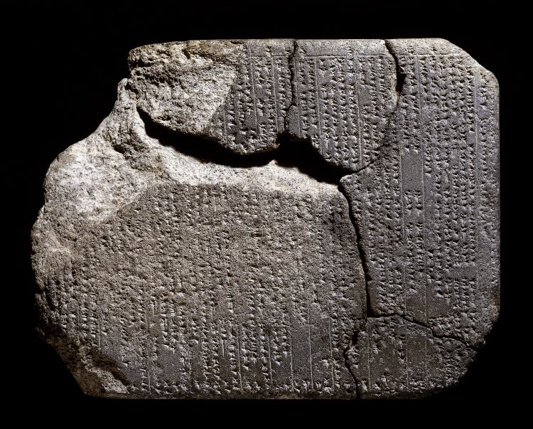
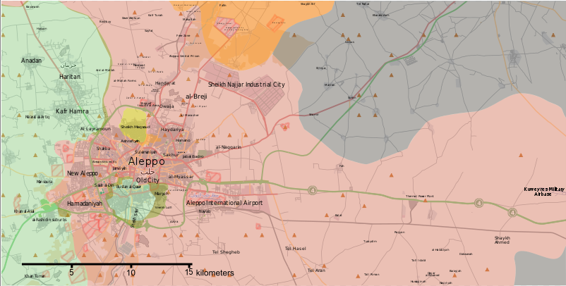

Originally published on Medium in Dec 9, 2016
One of my greatest pleasures, indulgences even, is a trip to the British Museum. And as much as I love the company of a friend or my partner, visiting on my own is special as it allows for deliberate dawdling amongst even the (what some may call) driest of exhibits. Last week, on one of these solo trips, I found myself in the dusty ruins of Bronze Age Mesopotamia. Amidst super-glued pottery and rotted string harps, I stumbled on a cracked, stone tablet covered in geometric scrawl.
As it dawned on me what I was looking at, I experienced at first surprise, followed by curiosity, ironic then bitter humour, deep sadness, and finally walked away in cynical acceptance.
You see, what I had found was a treaty between the Hittites, who were the dominant force in Anatolia and the Levant in this period, and the city of Aleppo in modern-day Syria. Yes, that Aleppo. The clay tablet dates from around 1300 BC, was found in modern-day Turkey and was written in Akkadian (being the diplomatic lingua franca of the time). In 1300 BC, the people of Aleppo found themselves trapped between the two competing powers of the Hittites and Mittanians. Aleppo made the crucial mistake of offending both these powers, and were consequently greatly punished with lands being given away to yet other local powers. The city was used to settle political scores between rival empires and curry favours with local players.
I don’t claim to be any kind of nature expert, but that’s kind of my point; nature appreciation is open to anyone at any level. So here’s my take on how to get you started on your path to becoming the next David Attenborough:
Incredible, I thought. Just how far back does the suffering of Aleppo go? Since March 2011, Syria has been devastated by internal strife. Battle has raged on and off in the city of Aleppo since mid-2012, with many of the recent casualities being civilian, even children. Just as three thousand years ago, the normal people of Aleppo, the bakers, the mechanics, the teachers, the schoolchildren, find themselves trapped between hostile, competing interests. The principal threat to their survival is the Syrian government with their Russian backers, who are known to have bombed civilians, at least through negligence, possibly deliberately. The Syrian Opposition forces, according to some sources, rather than protecting the populace may now be shelling the routes out of the city to prevent civilians from escaping (although the UN remains unclear as to what really is happening). Al-qaeda linked groups, the SDF, Islamic State, and countless other splinter groups close in. Just check this map from 4th Dec 2016 for an idea of the mess right now:
Throw in the proxy forces of Iran, Lebanon, Saudi Arabia, Turkey, the US and the UK, and you see that history has come full circle; once again the population of Aleppo is the unhappy participant in a lethal geopolitical game.
Aleppo has forever been at the crossroads between competing civilisations: Hittites, Mittanians, Babylonians, Assyrians, Persians, Egyptians, Greeks, Romans, Mongols, Arabs, Crusaders, Turks, Ottomans, France, UK, US and Israel, to name a few, have all tried to exert influence over this area. Right now, it’s hard to see an easy end to a war that slogs away more than five years since its beginnings. Nevertheless, I hope some day soon a peace treaty will be made — perhaps this time not on clay tablet — and that it doesn’t end up in the British Museum as yet another relic of shattered dreams.